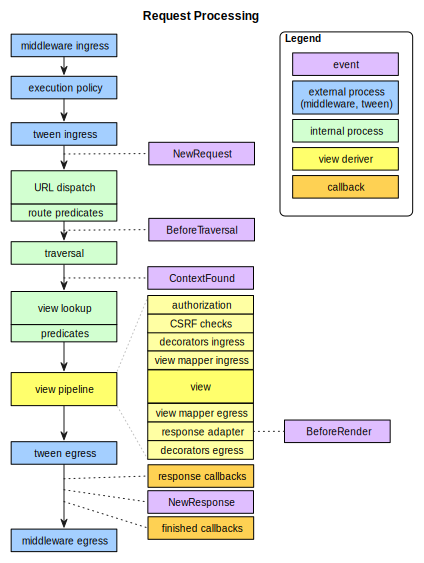

Request Processing¶
Once a Pyramid application is up and running, it is ready to accept requests and return responses. What happens from the time a WSGI request enters a Pyramid application through to the point that Pyramid hands off a response back to WSGI for upstream processing?
A user initiates a request from their browser to the hostname and port number of the WSGI server used by the Pyramid application.
The WSGI server used by the Pyramid application passes the WSGI environment to the
__call__method of the Pyramid router object.A request object is created based on the WSGI environment.
The application registry and the request object created in the last step are pushed on to the thread local stack that Pyramid uses to allow the functions named
get_current_request()andget_current_registry()to work.A
NewRequestevent is sent to any subscribers.If any route has been defined within application configuration, the Pyramid router calls a URL dispatch "route mapper." The job of the mapper is to examine the request to determine whether any user-defined route matches the current WSGI environment. The router passes the request as an argument to the mapper.
If any route matches, the route mapper adds the attributes
matchdictandmatched_routeto the request object. The former contains a dictionary representing the matched dynamic elements of the request'sPATH_INFOvalue, and the latter contains theIRouteobject representing the route which matched.A
BeforeTraversalevent is sent to any subscribers.Continuing, if any route matches, the root object associated with the found route is generated. If the route configuration which matched has an associated
factoryargument, then this factory is used to generate the root object; otherwise a default root factory is used.However, if no route matches, and if a
root_factoryargument was passed to the Configurator constructor, that callable is used to generate the root object. If theroot_factoryargument passed to the Configurator constructor wasNone, a default root factory is used to generate a root object.The Pyramid router calls a "traverser" function with the root object and the request. The traverser function attempts to traverse the root object (using any existing
__getitem__on the root object and subobjects) to find a context. If the root object has no__getitem__method, the root itself is assumed to be the context. The exact traversal algorithm is described in Traversal. The traverser function returns a dictionary, which contains a context and a view name as well as other ancillary information.The request is decorated with various names returned from the traverser (such as
context,view_name, and so forth), so they can be accessed via, for example,request.contextwithin view code.A
ContextFoundevent is sent to any subscribers.Pyramid looks up a view callable using the context, the request, and the view name. If a view callable doesn't exist for this combination of objects (based on the type of the context, the type of the request, and the value of the view name, and any predicate attributes applied to the view configuration), Pyramid raises a
HTTPNotFoundexception, which is meant to be caught by a surrounding exception view.If a view callable was found, Pyramid attempts to call it. If an authorization policy is in use, and the view configuration is protected by a permission, Pyramid determines whether the view callable being asked for can be executed by the requesting user based on credential information in the request and security information attached to the context. If the view execution is allowed, Pyramid calls the view callable to obtain a response. If view execution is forbidden, Pyramid raises a
HTTPForbiddenexception.If any exception is raised within a root factory, by traversal, by a view callable, or by Pyramid itself (such as when it raises
HTTPNotFoundorHTTPForbidden), the router catches the exception, and attaches it to the request as theexceptionattribute. It then attempts to find a exception view for the exception that was caught. If it finds an exception view callable, that callable is called, and is presumed to generate a response. If an exception view that matches the exception cannot be found, the exception is reraised.The following steps occur only when a response could be successfully generated by a normal view callable or an exception view callable. Pyramid will attempt to execute any response callback functions attached via
add_response_callback(). ANewResponseevent is then sent to any subscribers. The response object's__call__method is then used to generate a WSGI response. The response is sent back to the upstream WSGI server.Pyramid will attempt to execute any finished callback functions attached via
add_finished_callback().The thread local stack is popped.
This is a very high-level overview that leaves out various details. For more detail about subsystems invoked by the Pyramid router, such as traversal, URL dispatch, views, and event processing, see URL Dispatch, Views, and Using Events.